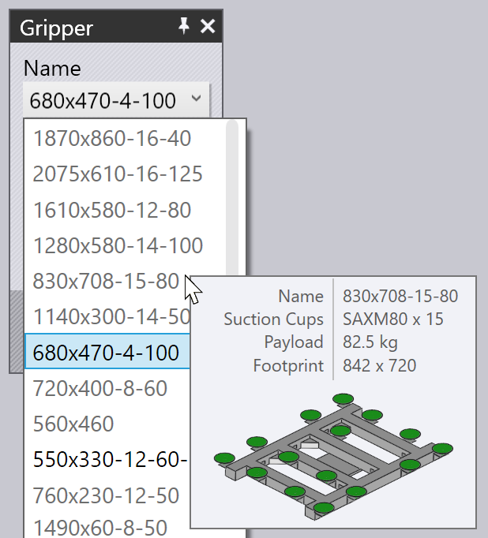

Ophalen van pallet
Wanneer een vacuümzuiger of magneetgrijper wordt gebruikt, worden voorgesneden platen (platte stukken) opgehaald van een pallet. Deze parameters hebben invloed op dit proces:
-
De positie van de pallet in de machinecel.
-
De positie en oriëntatie van de stapel stukken op de pallet.
-
De positie en oriëntatie van de zuiggrijper op het stuk.
-
De zuigerconfiguratie van de grijper (welke zuigers zijn in-/uitgeschakeld, en welk type zuigers is in elke bus gemonteerd).
-
De gebieden van het stuk die worden opgenomen door de camera op de robot wordt gebruikt als referentie voor het kalibreren van de positie van het stuk.De vensters die worden gebruikt om al deze instellingen te bewerken, worden hieronder weergegeven - ze zijn allemaal onderling verbonden door navigatielinks omhoog/omlaag die in een logische volgorde naar andere venster leiden:

Zoals de bovenstaande afbeelding laat zien, zijn deze vensters ook gemakkelijk toegankelijk door gewoon op op verschillende objecten in de simulatie te klikken:
-
Klik op een pallet om het venster Pallet te openen.
-
Om de stukstapel op een pallet te bewerken (het venster Ophalen), klikt u op de voorgesneden platen die op de pallet liggen.
-
Om de grijperpositie op de voorgesneden plaat (het venster Grijper) te bewerken, klikt u op de grijper.
-
Om de zuigerconfiguratie van een grijper (het venster Zuiger) te bewerken, klikt u op op een van de zuigers.
-
Om de posities voor beeldvorming te bewerken (gebruikt door het nauwkeurige positieherkenningssysteem), klikt u op de camera.
Venster Pallet
Het venster Pallet wordt gebruikt om een pallet te selecteren en in de cel te plaatsen. U kunt dit venster openen door op een pallet te klikken; Flux plaatst ook de simulatietijdlijn zodat de robot op het punt voor ophalen van het stuk van de pallet wordt gepositioneerd.

-
Gebruik de selectie Naam om een andere pallet te selecteren. Normaal gesproken worden alleen pallets vermeld die bruikbaar zijn voor deze voorgesneden plaat, maar u kunt de controle Gefilterd uitschakelen en dan worden alle beschikbare pallets vermeld.
-
Als u de muis over een naam in de namenlijst beweegt, wordt een snel overzicht weergegeven van die pallet, samen met een miniatuur:

-
Gebruik de invoeren Positie om de pallet in Z en X (in celcoördinaten) te positioneren, en gebruik de invoer Hoek om de pallet te draaien. Terwijl u de pallet verplaatst of draait, volgen de stukstapel op de pallet en de grijper/robot allemaal de beweging.
-
Gebruik de knoppen Verder en Terug om naar de andere pallets in de cel te navigeren; bijvoorbeeld de pallet met de stukaflegprocessen.
-
Gebruik de navigatieknop Opname om de positie van de stukstapel op de pallet te bewerken.
-
Gebruik de knop Config. Opslag onder de sectie Geavanceerd sectie om deze celconfiguratie (inclusief alle pallets) als standaard op te slaan voor deze machine.
Venster Ophalen
Het venster Ophalen wordt gebruikt om de positie van de stukstapel op de pallet te bewerken.U kunt dit venster direct openen door op de stapel voorgesneden platen op de pallet te klikken.(U kunt het venster ook openen via de link Opname in het venster Pallet).

-
Gebruik de invoeren Positie om de stapel op de pallet te positioneren; deze coördinaten specificeren het midden van het stuk in Z en X, relatief ten opzichte van de hoek van de pallet en bevinden zich in de lokale coördinatenruimte van de pallet.
-
Gebruik de invoer Hoek om het stuk in de pallet rond te draaien.
-
Gebruik de schakelaar Stuk draaien om het stuk te spiegelen. Houd er rekening mee dat dit meestal betekent dat een extra omgrijpprocedure noodzakelijk is voordat de eerste buiging kan worden bewerkt (dit wordt automatisch toegevoegd door TecZone Bend).
-
Gebruik de link Camera… om over te schakelen naar het venster Camera waarin u de beeldherkenningsfase van het ophalen kunt instellen.
-
De link Steunpunten… link opent de Waypoints editor waarin u het robottraject tijdens het ophalen kunt afstellen.
-
De link Omgrijpsta. opent het venster Omgrijpstation waarin u de positie van het omgrijpstation tijdens het ophalen kunt configureren.Terwijl het stuk op de pallet wordt verplaatst, blijft de grijper vastzitten aan het stuk en volgt de robot de bewegingen.
Venster Grijper
Het venster Grijper wordt gebruikt om een andere grijper te selecteren of om de positie en de oriëntatie te wijzigen waarin de grijper het stuk oppakt.

-
Gebruik de selectie Naam om een andere grijper te selecteren. Normaal worden alleen grijpers weergegeven die geschikt zijn voor dit stuk (op basis van grijpergrootte en het laadvermogen), maar u kunt de controle Gefilterd uitschakelen en dan worden alle grijpers vermeld.
-
Als u de muis over een naam in de lijst met grijpers beweegt, wordt een overzicht weergegeven van die grijper, samen met een miniatuur:
 -
Gebruik de invoeren Positie om het midden van de grijper te verplaatsen ten opzichte van het midden van het stuk en gebruik de ingang Hoek om de grijper te draaien, te opzichte van de oriëntatie van het stuk.
-
Gebruik de link Zuiger om over te schakelen naar een fijne bewerking van de grijper (verschillende zuigers selecteren, zuigers in-/uitschakelen).
-
De knop Grijpvlak selecteren kan worden gebruikt om de grijper te positioneren in een ander vlak. Normaal gesproken wordt het grootste vlak in het model gebruikt om de grijper te positioneren. Als u dit wilt wijzigen, klikt u op deze knop. Klik vervolgens op het vlak waarin de grijper moet worden gepositioneerd:

-
De knop Tanggrijper gebruiken wordt gebruikt om dit stuk om te schakelen naar het gebruik van de stukhouder en de klauwgrijper (mechanische grijper). Alle stadia van de buigcyclus van ophalen tot afleggen worden opnieuw berekend met behulp van de klauw gripper[1].
Zuigwaarschuwingen
Als de grijper zo wordt bewogen dat een deel van de zuigers niet op de plaat ligt, of over gaten in het stuk is geplaatst, worden de zuigers gemarkeerd en verschijnt er een fout in de kolom
Ophalen van de navigator, zoals weergegeven in de onderstaande afbeelding:

Menu Acties

De knop Acties wordt gebruikt om een menu te openen dat enkele nuttige acties biedt voor de grijper:
-
Auto-Shift: probeert de grijper over het stuk na te zetten en ervoor te zorgen dat alle zuigers binnen het stuk liggen en niet over gaten (indien mogelijk).
-
Uitschakelen van lekkende zuigers: schakelt alle zuigers uit die over gaten liggen, of buiten de grenzen van de part[2].
-
Inschakelen van alle zuigers: schakelt alle zuigers in die zijn uitgeschakeld.
-
Config. Opslag: als u de grijper configureert door sommige zuigers uit te schakelen of verwijderen, of door de armlengtes of -hoeken te wijzigen (voor MultiGrippers die van vorm kunnen veranderen), kunt u de gewijzigde configuratie van de grijper opslaan met een nieuwe naam, voor eenvoudig hergebruik.
-
Grijper exporteren: sla de huidige grijper op als .fxbgrip-bestand dat kan worden geïmporteerd in een andere installatie van TecZone Bend. Dit is handig als u een aangepaste grijper heeft geïmporteerd en deze moet delen met andere installaties.
Venster Zuiging
Het venster Zuiging wordt gebruikt om de indeling van de zuigers van een grijper te configureren. U kunt dit venster openen door direct op een zuiger te klikken of door de zuiger te selecteren in het venster Grijper.

-
Gebruik de selectie Zuiger # om een bepaalde zuiger in de grijper te selecteren, of gebruik de knoppen Verder en Terug om te navigeren door de zuigers. De geselecteerde zuiger wordt blauw gemarkeerd en kan worden bewerkt.
-
Voor elke zuiger kunt u de Status instellen op Aan, Uit of Verwijderd.Zie de onderstaande beschrijving voor meer informatie hierover.
-
Gebruik het venster Type om over te schakelen naar een ander type zuiger.Meestal worden alle zuigers in een grijper gewijzigd naar het nieuwe type, maar u kunt zuigers ook mix-and-matchen door de knop Alle wijzigen uit te zetten en en vervolgens de zuigers te wijzigen. (Opmerking: wanneer u dit doet, wordt de selectie zuigers beperkt, omdat alle zuigers die op een grijperframe zijn gemonteerd, dezelfde werkhoogte moeten hebben). De bovenstaande afbeelding toont twee van de zuigers die zijn vervangen door kleinere exemplaren (SAXM50 in plaats van de standaard SAXM80).
-
Gebruik de knop Reset om de grijper terug te zetten in zijn oorspronkelijke staat - alle zuigers worden ingeschakeld en worden teruggezet naar het standaard zuigertype dat is gedefinieerd in de grijper.De standaard status voor een zuiger is Aan, wat betekent dat de zuigers zijn aangesloten op de vacuümleiding, en helpen bij het heffen.Als een zuiger over een gat in het stuk ligt, kunt u de status wijzigen in Uit, wat geen vacuüm betekent. (Dit vermindert de hefkracht van de grijper en verandert het midden van de hefkracht, waarmee Flux rekening houdt om de grijpercapaciteit te controleren). Merk op dat de zuiger nog steeds in het frame gemonteerd en deelneemt aan botsingscontroles. Flux geeft uitgezette zuigers weer als wireframes, zoals u kunt zien bij twee van de zuigers in de bovenstaande afbeelding.Ten slotte kunt u een zuigers instellen op Verwijderd, wat betekent dat de zuiger is verwijderd van het frame in de eigenlijke machine. Deze zuiger heeft geen hefkracht en veroorzaakt geen botsing. Dit is soms handig als een zuiger over een gevormd gebied valt of een botsing veroorzaakt met de matrijs of machinetafel tijdens het gebruik.
Venster Camera
Het ophaalproces vereist dat een of meer afbeeldingen door de camera worden vastgelegd en een beeldverwerkingssysteem gebruikt deze afbeeldingen dan om precies in te schatten waar het stuk zich bevindt op de pallet. Als u op de camera op de robot klikt of de navigatieknop Camera selecteert in het venster Ophalen wordt het venster Camera geopend. Flux positioneert de simulatie ook zo dat de robot in de houding is die nodig is om het beeld vast te leggen:

-
Gebruik de lijst Index (of de knoppen Verder en Terug) om de verschillende nauwkeurige detectiebeelden te doorlopen die voor dit stuk worden gebruikt.Terwijl u dit doet, geeft Flux een oranje omtrek weer die de beeldherkenningszone op het stuk toont (zie bovenstaande afbeelding).
-
Gebruik de invoeren Positie om deze zone in Z en X te herpositioneren om enkele interessante features beter op te nemen die de nauwkeurigheid van de detectie kunnen verbeteren (hoeken, kleine uitsparingen, uitklinkingen).
-
Gebruik de knop Toevoegen om een extra detectieafbeelding toe te voegen (maximaal 4) en gebruik de knop Verwijderen om de huidige detectieafbeelding te verwijderen. Tijdens de simulatie van het ophalen van het stuk toont Flux de robot die naar elk van deze detectiegebieden beweegt met de camera omlaag en pauzerend om het beeld te verwerven.Als de schakelaar Doorlichttafel gebruiken is ingeschakeld, dan wordt het stuk overgebracht naar een verlichte tafel voordat de camera wordt gebruikt om het af te beelden. Dit verhoogt het contrast en is handig voor sterk reflecterende stukken. TecZone Bend voegt de achtergrondverlichtingstafel toe en positioneert deze automatisch in de buurt van de aflegpallet, maar u kunt de positie vervolgens configureren door erop te klikken: